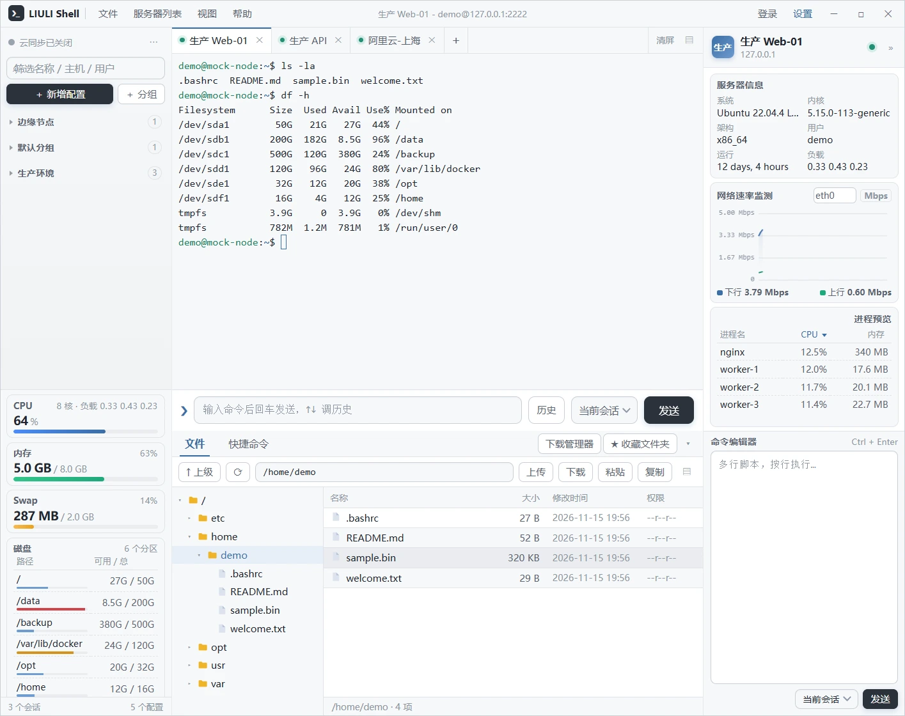

▤
服务器管理
用分组整理服务器，支持多选、拖拽移动与复制配置；删除的连接进入 30 天回收站，可随时恢复。
LIULI Shell 是一款跨平台 SSH 客户端。
它把连接管理、交互式终端、SFTP 文件传输、运行状态监控与配置同步整合到一个桌面应用中，适合需要同时维护多台服务器的开发者与运维人员。

Windows 10 / 11 提供安装版与便携版；Linux 与 macOS 使用源码构建。安装版与便携版功能一致。
在目标系统上安装依赖并打包，支持 deb、AppImage、tar.gz 以及 macOS 的 dmg 与 zip。
%APPDATA%\LIULI Shell，升级或重装不会删除。更换电脑时，可以使用 云同步备份，或在设置中导出配置文件后迁移。
Linux 与 macOS 需要在本机构建。下列命令请逐条执行，不要整段粘贴。脚本会识别发行版、安装依赖并询问打包类型。
先选择源码来源（Gitee 或 GitHub，二选一），再进入目录执行构建脚本。
Gitee 默认克隆目录为 liuli-shell，GitHub 默认目录为 Liulishell；下面统一克隆为 liuli-shell，后续命令保持一致。
需要 Git。第 0 步安装 Git；第 1 步只保留一个源码源；第 2 步执行构建脚本。克隆完成后再运行构建命令。
# 0) 需要 Git；已安装会自动跳过（其他发行版换成 dnf / pacman） command -v git >/dev/null || sudo apt-get update && sudo apt-get install -y git # 1) 先删旧目录，再克隆源码（Gitee / GitHub 二选一） # Gitee（国内推荐，默认目录就是 liuli-shell） rm -rf liuli-shell Liulishell && git clone https://gitee.com/liuliwanjiaweb/liuli-shell.git liuli-shell # GitHub（海外推荐；默认目录是 Liulishell，这里显式指定为 liuli-shell） rm -rf liuli-shell Liulishell && git clone https://github.com/LIULIWANJIA/Liulishell.git liuli-shell # 2) 进入项目并构建：识别发行版 → 补系统依赖 → 选 deb / AppImage → 打包 → 询问安装 cd liuli-shell && bash scripts/build-linux.sh
产物在 dist/。脚本会提示选择 1 = deb / 2 = AppImage / 3 = 两者都要；只打 .tar.gz 使用 bash scripts/build-linux.sh tar。脚本会自动处理 Ubuntu 24.04+ 的 *t64 包名回退。CI 等非交互环境不会自动安装，需要手动安装产物。环境异常可先运行 bash scripts/build-linux.sh check 体检；Electron 下载慢时脚本会自动切换镜像。
# 3) 依赖没装上或构建报错时，再依次尝试
bash scripts/build-linux.sh repair
bash scripts/build-linux.sh deps
bash scripts/build-linux.sh
基础环境已安装会自动跳过。Homebrew 安装过程需要输入当前用户密码。克隆后安装依赖并打包，Intel 与 Apple Silicon 可按需选择。
# 基础环境（已装过会自动跳过；xcode-select 会弹窗，等安装完成再继续） xcode-select --install 2>/dev/null || true command -v brew >/dev/null || /bin/bash -c "$(curl -fsSL https://raw.githubusercontent.com/Homebrew/install/HEAD/install.sh)" # 新装 Homebrew 后加入当前终端 PATH（Intel 为 /usr/local/bin/brew） if [ -x /opt/homebrew/bin/brew ]; then eval "$(/opt/homebrew/bin/brew shellenv)"; elif [ -x /usr/local/bin/brew ]; then eval "$(/usr/local/bin/brew shellenv)"; fi # 需要 Node ≥ 18；缺失或版本过旧时安装 20，然后验证 node -v 2>/dev/null | grep -qE '^v(1[89]|[2-9][0-9])' || brew install node@20 brew link --overwrite --force node@20 >/dev/null 2>&1 || true node -v && npm -v # 先删旧目录，再克隆源码（Gitee / GitHub 二选一） rm -rf liuli-shell Liulishell # Gitee（国内推荐，默认目录就是 liuli-shell） git clone https://gitee.com/liuliwanjiaweb/liuli-shell.git liuli-shell # GitHub（海外推荐；默认目录是 Liulishell，这里显式指定为 liuli-shell） git clone https://github.com/LIULIWANJIA/Liulishell.git liuli-shell
cd liuli-shell npm ci || npm install # 失败自动回退 npm install npm run vendor # 国内网络下载 Electron 慢时，先取消下面两行注释（可选） # export ELECTRON_MIRROR=https://registry.npmmirror.com/-/binary/electron/ # export ELECTRON_BUILDER_BINARIES_MIRROR=https://registry.npmmirror.com/-/binary/electron-builder-binaries/ npm run dist:mac # x64 + arm64 一起出 npx electron-builder --mac dmg zip --arm64 # 只打 Apple Silicon
产物在 dist/（.dmg / .zip）。npm run vendor 会复制 xterm 资源到 src/renderer/vendor，打包前必须执行；Intel 与 Apple Silicon 产物不能混用。未签名应用被 Gatekeeper 拦截时，右键「打开」放行。
国内网络建议使用 Gitee,Electron 下载慢时可以设置镜像变量。
支持导入 FinalShell 导出的 JSON 文件或整个配置文件夹。导入时会读取连接信息、重建分组层级，并在写入前给出统计。
拖入文件即可，支持一次选择多个 JSON 或整个配置文件夹。
文件夹按层级自动创建分组（最多三级），三级以下文件夹内的 JSON 归入对应的一级分组，不受目标分组影响。
使用问题、功能建议和版本动态会在群里同步。选择常用的平台加入即可。
从连接服务器到传文件、看状态、迁移配置，主要操作都在客户端内完成。下面按板块说明每个部分能做什么。
用分组整理服务器，支持多选、拖拽移动与复制配置；删除的连接进入 30 天回收站，可随时恢复。
每个标签对应独立的 SSH 会话，支持命令历史、快捷输入、断线重连与标签拖动排序；代理连接带状态标识。
SFTP 目录树与文件列表联动，终端切换目录时自动跟随；支持上传下载、权限修改和内置文本编辑器。
持续采集 CPU、内存、Swap、磁盘、网卡与进程数据，图表量程自动适配，异常负载可以直接定位。
下载任务集中在独立窗口管理，可暂停、取消或清空；实时显示进度、速率与任务状态。
支持官方云服务与自定义 WebDAV：加密同步服务器配置、分组与收藏，多设备双向合并；也可以手动同步或备份。
读取 FinalShell 的 JSON 备份或整个配置目录，按原层级重建分组；导入前先预览，重复项自动跳过。
内置 8 套浅色与深色主题，字体、字号、界面缩放、鼠标行为与快捷键均可调整并自动保存。
为单个连接或全局设置 HTTP / SOCKS5 代理，支持默认代理与直连回退，适配内网和受限网络。
把高频命令按板块整理，减少在终端里反复输入长命令；需要修改时再交给命令编辑器。
常用、Docker、网络等板块分开管理，按钮只显示名称，界面保持干净；板块与命令都支持拖动排序。
连接后自动采集运行状态，异常负载先在客户端里定位，再决定是否进入终端处理。
左侧显示资源概览，右侧同步网络速率与进程占用；刷新间隔与速率单位都可以在设置里调整。
连接凭据、配置备份与删除恢复都在客户端内完成，减少对额外服务与手动操作的依赖。
连接凭据只保存加密串，界面不回显明文；配置写入前自动备份，误删的服务器与分组会进入回收站。
三栏宽度可以拖动调整，也可以按需隐藏。顶部是会话标签与窗口操作，底部状态栏显示当前连接数。


客户端界面与本站均已提供简体中文、繁体中文、英语、俄语、法语、德语、日语与韩语版本。切换语言时页面地址与 hreflang 标注同步变化，每种语言都对应同一套功能与截图。
设置项按用途分组，修改后立即生效并自动保存。以下是最常用的六组选项。
浅色 6 套、深色 2 套；切换后界面、终端背景与 ANSI 配色同步变化。
需要手动控制构建流程、为不同发行版准备依赖，或排查打包错误时，展开下面的完整参考。
不同发行版的系统库包名不同，Ubuntu 24.04 起改为 *t64。三种产物用途：AppImage 免安装、deb 走包管理、tar.gz 解压即用且不依赖 FUSE。
scripts/build-linux.sh 会自动识别发行版并处理 t64 包名回退。bash scripts/build-linux.sh 一条命令完成「识别发行版 → 补系统依赖 → 选包类型 → 打包 → 询问安装」，已兼容 apt / dnf / pacman。只想装依赖用 ... deps，只体检用 ... check，环境坏了用 ... repair。安装阶段：deb 走 apt install 并建桌面图标，AppImage 复制到 ~/Applications/LIULI-Shell 并生成应用菜单与桌面图标。chmod +x dist/LIULI-Shell-*-x86_64.AppImage ./dist/LIULI-Shell-*-x86_64.AppImage # Debian / Ubuntu 安装 deb sudo apt install ./dist/LIULI-Shell-*_amd64.deb # 解压即用（不需要 FUSE，也不写入系统目录） mkdir -p ~/Applications tar -xzf dist/LIULI-Shell-*-x86_64.tar.gz -C ~/Applications ~/Applications/LIULI-Shell-*/liulishell
AppImage 使用 type-2 运行时，需要系统的 FUSE 2。Ubuntu 22.04 之前默认自带，24.04 / 26.04 需要手动安装；没装 FUSE 也可以临时解包运行。
# Ubuntu 24.04 / 26.04 sudo apt install -y libfuse2t64 # Ubuntu 20.04 / 22.04、Debian 12 sudo apt install -y libfuse2 # 不装 FUSE 直接运行（启动稍慢，功能一致） ./LIULI-Shell-*-x86_64.AppImage --appimage-extract-and-run # 或者干脆用 tar.gz 版本，完全不依赖 FUSE
# 1) 放到固定位置 mkdir -p ~/Applications cp dist/LIULI-Shell-*-x86_64.AppImage ~/Applications/LIULI-Shell.AppImage chmod +x ~/Applications/LIULI-Shell.AppImage # 2) 取出图标（--appimage-extract 会在当前目录解出 squashfs-root） cd /tmp && ~/Applications/LIULI-Shell.AppImage --appimage-extract '*.png' >/dev/null 2>&1 mkdir -p ~/.local/share/icons/hicolor/512x512/apps cp /tmp/squashfs-root/*.png ~/.local/share/icons/hicolor/512x512/apps/liulishell.png 2>/dev/null \ || cp /tmp/squashfs-root/liulishell.png ~/.local/share/icons/hicolor/512x512/apps/ 2>/dev/null # 3) 写应用列表项（$HOME 会展开成当前用户目录） mkdir -p ~/.local/share/applications cat > ~/.local/share/applications/LiuliShell.desktop <<EOF [Desktop Entry] Type=Application Name=LIULI Shell Comment=跨平台 SSH 终端与服务器管理工具 Exec=$HOME/Applications/LIULI-Shell.AppImage %U Icon=liulishell Terminal=false Categories=Development;System;Network; StartupWMClass=LiuliShell EOF chmod +x ~/.local/share/applications/LiuliShell.desktop update-desktop-database ~/.local/share/applications 2>/dev/null || true # 4) 需要桌面图标，再复制一份并标记可信任 cp ~/.local/share/applications/LiuliShell.desktop ~/Desktop/ gio set ~/Desktop/LiuliShell.desktop metadata::trusted true 2>/dev/null || true # 中文环境的桌面目录可能是 ~/桌面，按实际情况替换
装 .deb 的用户不需要这些步骤：deb 安装时会自动写入 /usr/share/applications，应用列表里直接可见。
环境要求：macOS 12+（Intel 或 Apple Silicon），Xcode Command Line Tools、Homebrew、Git、Node.js 20/22 LTS。dmg 不能在 Windows / Linux 上构建。
1. 基础工具（xcode-select 会弹窗，等待安装完成再继续）
xcode-select --install /bin/bash -c "$(curl -fsSL \ https://raw.githubusercontent.com/Homebrew/install/HEAD/install.sh)" # Apple Silicon 把 brew 写入 PATH（Intel 为 /usr/local/bin/brew；重复执行不会重复追加） grep -qsF 'brew shellenv' ~/.zshrc || echo 'eval "$(/opt/homebrew/bin/brew shellenv)"' >> ~/.zshrc source ~/.zshrc
2. Node 20 与 Git
brew install node@20 git brew link --overwrite --force node@20 node -v && npm -v # 期望输出 v20.x
3. 源码与依赖（先删旧目录，避免残留文件导致异常；Gitee / GitHub 二选一。Gitee 默认目录是 liuli-shell，GitHub 默认目录是 Liulishell，这里统一显式克隆为 liuli-shell）
rm -rf liuli-shell Liulishell # Gitee（国内推荐） git clone https://gitee.com/liuliwanjiaweb/liuli-shell.git liuli-shell # GitHub（海外推荐，取消下一行注释并注释上面的 Gitee 行） # git clone https://github.com/LIULIWANJIA/Liulishell.git liuli-shell cd liuli-shell npm ci || npm install # 锁文件与平台不一致时回退 npm install npm run vendor # 复制 xterm 资源到 src/renderer/vendor，打包前必须执行
4. 打包（只打当前架构最快；两种都要就给 dist:mac）
npm run dist:mac # x64 + arm64 一起出 npx electron-builder --mac dmg zip --arm64 # 只打 Apple Silicon npx electron-builder --mac dmg zip --x64 # 只打 Intel
5. 产物与缓存：产物在 ~/liuli-shell/dist/（*.dmg、*.zip）；Electron 与打包工具的下载缓存在 ~/Library/Caches/electron/、~/Library/Caches/electron-builder/，删掉可强制重新下载。
6. 未签名安装：拖入「应用程序」后若被 Gatekeeper 拦截，右键「打开」放行，或执行：
xattr -dr com.apple.quarantine "/Applications/LIULI Shell.app" spctl --assess --type execute -vv "/Applications/LIULI Shell.app" # 查看拦截原因
对外分发需要 Apple Developer ID 证书并 notarize：配置 CSC_LINK（.p12 路径或 base64）、CSC_KEY_PASSWORD；公证还需要 APPLE_ID、APPLE_APP_SPECIFIC_PASSWORD、APPLE_TEAM_ID，electron-builder 会自动完成签名与公证。
npx electron-builder --mac dmg --universal（体积约为单架构的两倍，构建也明显更慢）。| 报错 / 现象 | 原因与处理 |
|---|---|
| 无法定位软件包 libasound2 | Ubuntu 24.04 / Debian 13 起系统库统一改名 *t64（如 libasound2t64、libgtk-3-0t64）。先按旧名装、失败自动回退：bash scripts/build-linux.sh deps 已内置该逻辑。 |
| dlopen(): error loading libfuse.so.2 | AppImage 运行时需要 FUSE 2：24.04+ 装 libfuse2t64，22.04 及更早装 libfuse2；不装 FUSE 可用 --appimage-extract-and-run，或直接换 .tar.gz。 |
| Electron 下载超时 / 卡在 downloading | 设置镜像后重试：export ELECTRON_MIRROR=https://registry.npmmirror.com/-/binary/electron/、export ELECTRON_BUILDER_BINARIES_MIRROR=https://registry.npmmirror.com/-/binary/electron-builder-binaries/。 |
| npm ci 失败 / 锁文件与平台不一致 | 删除 node_modules 后改用 npm install；Node 版本过旧（< 18）会直接装不上，改用 Node 20。 |
| rpmbuild not found | 只有打 rpm 时才需要：Fedora 装 rpm-build，Debian/Ubuntu 装 rpm 与 rpm2cpio 相关包，或先跳过 rpm 目标。 |
| Permission denied（运行 AppImage） | 缺执行权限：chmod +x dist/LIULI-Shell-*-x86_64.AppImage。 |
| errSecInternalComponent / 签名失败（macOS） | keychain 被锁定：security unlock-keychain -p <密码> ~/Library/Keychains/login.keychain-db 后重跑；CI 上还需 security set-key-partition-list。 |
dist/。Linux 为 LIULI-Shell-*-x86_64 / *-arm64 的 .AppImage / .deb / .tar.gz（脚本自动识别架构），macOS 为 .dmg / .zip。npm run vendor 会把 xterm.js 等前端资源复制到 src/renderer/vendor/，缺少这一步打出来的包终端会是空白。ubuntu-22.04、macos-14 runner）出包。dist/ 下对应平台的安装包与便携包作为 Release 附件上传（Windows 的 *.blockmap 仅用于差量更新，无需上传）；源码仓库不要提交 node_modules/ 与 dist/。